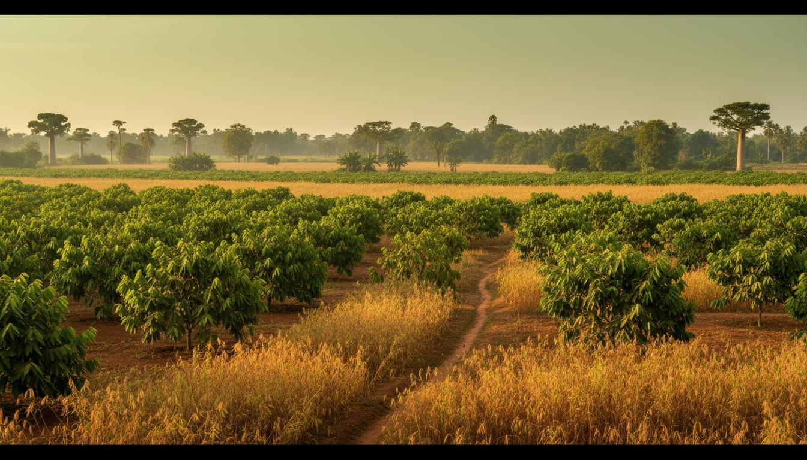
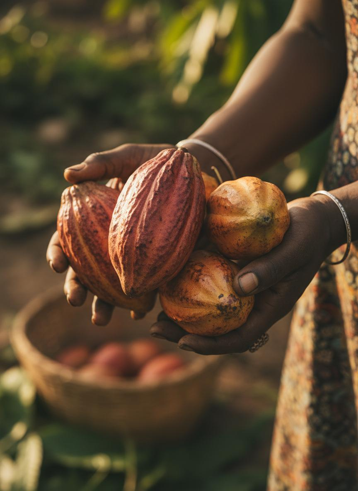
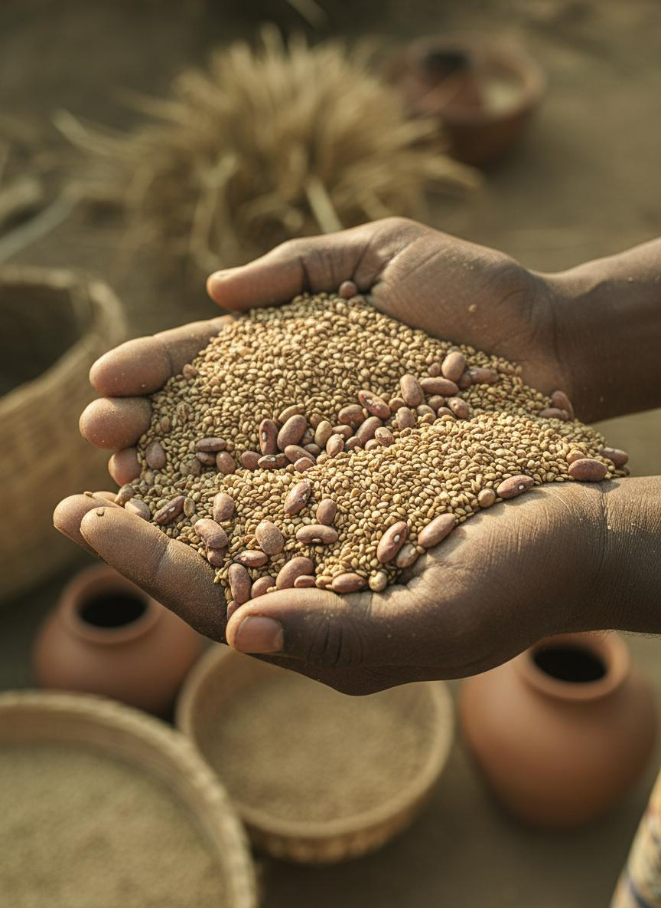
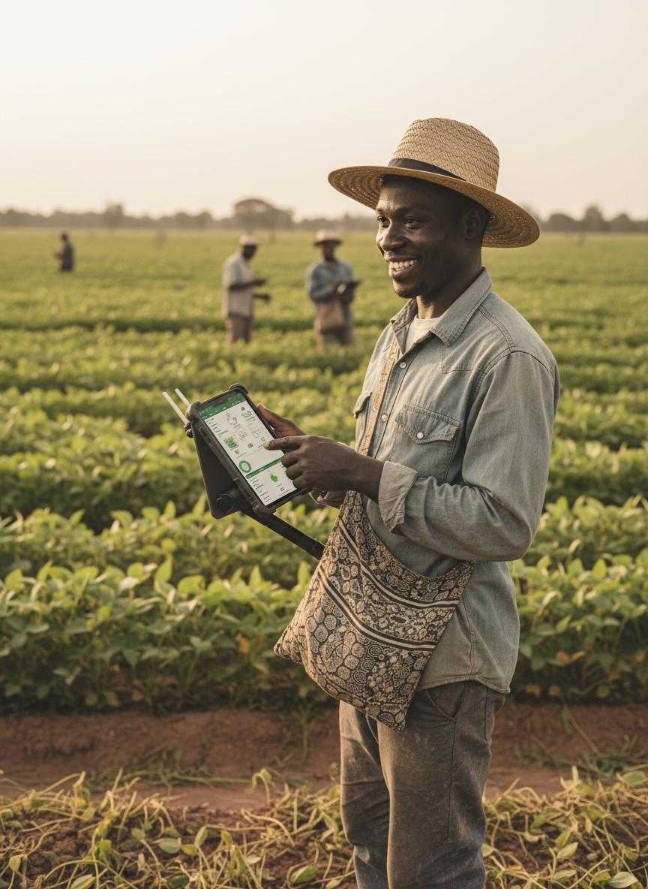
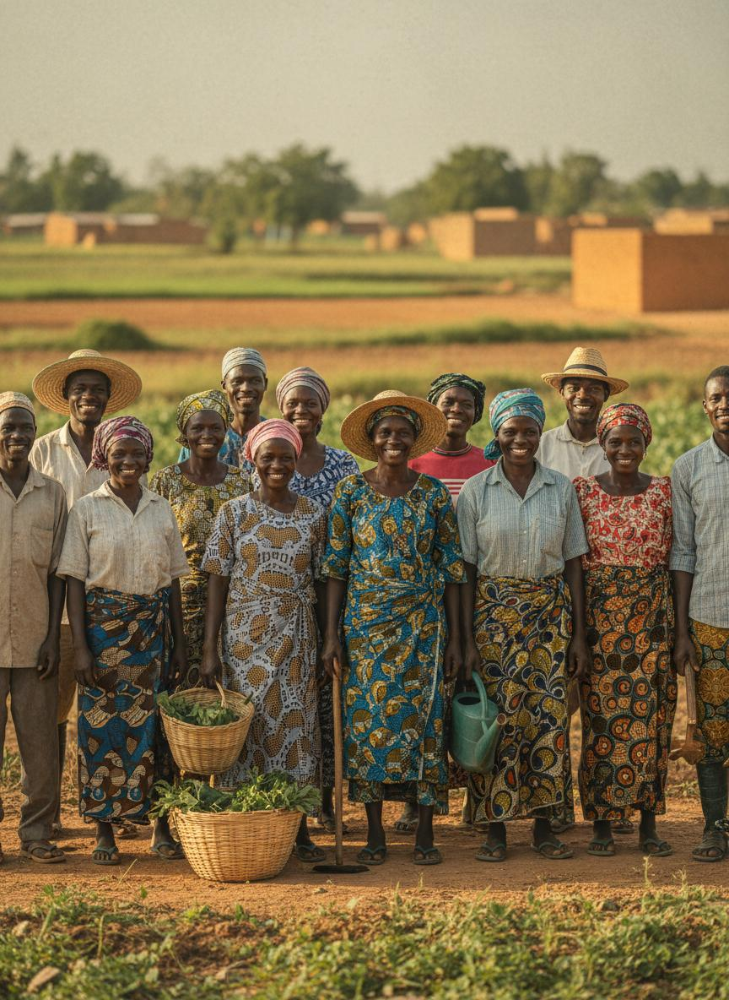

Cultivation, farming practice and inter-Africa trade — the agricultural base that everything else in the group builds on.

Farming across Taraba State and beyond — with room to grow as the group expands.
The work behind every harvest.




Regular writing on cultivation practice, post-harvest handling and market access — published in the newsroom.
Misalta Farms feeds the wider group: produce moves from cultivation to processing, hubs, Trade X and eventually across borders through Misalta Logistics.